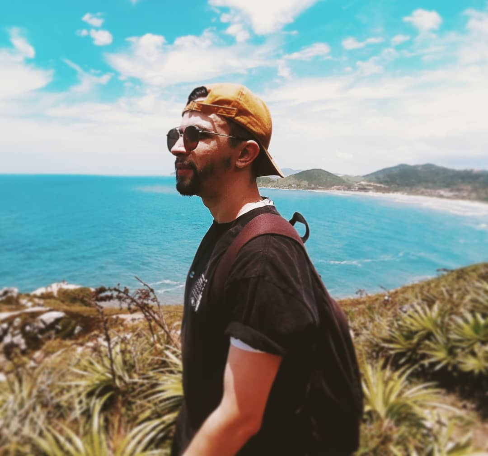
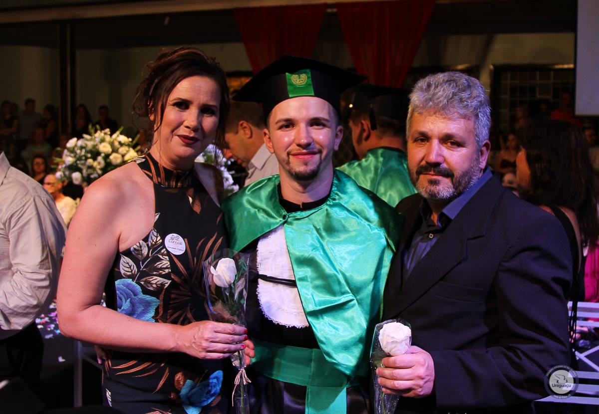
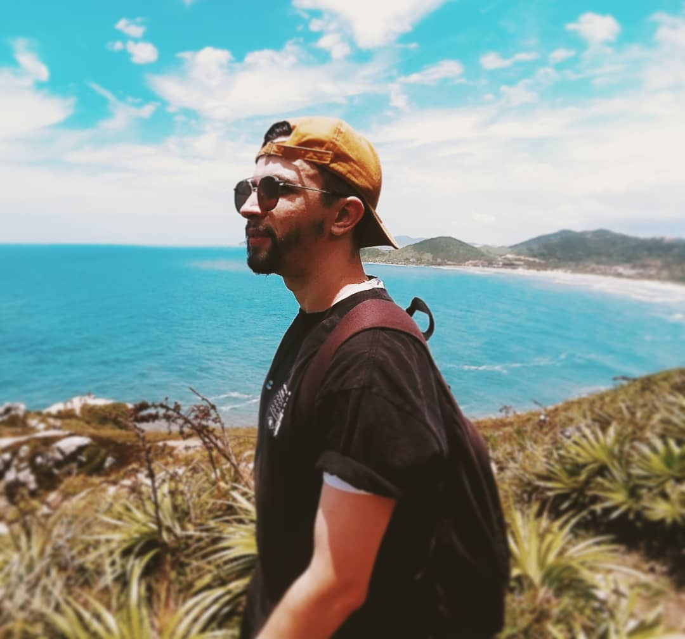
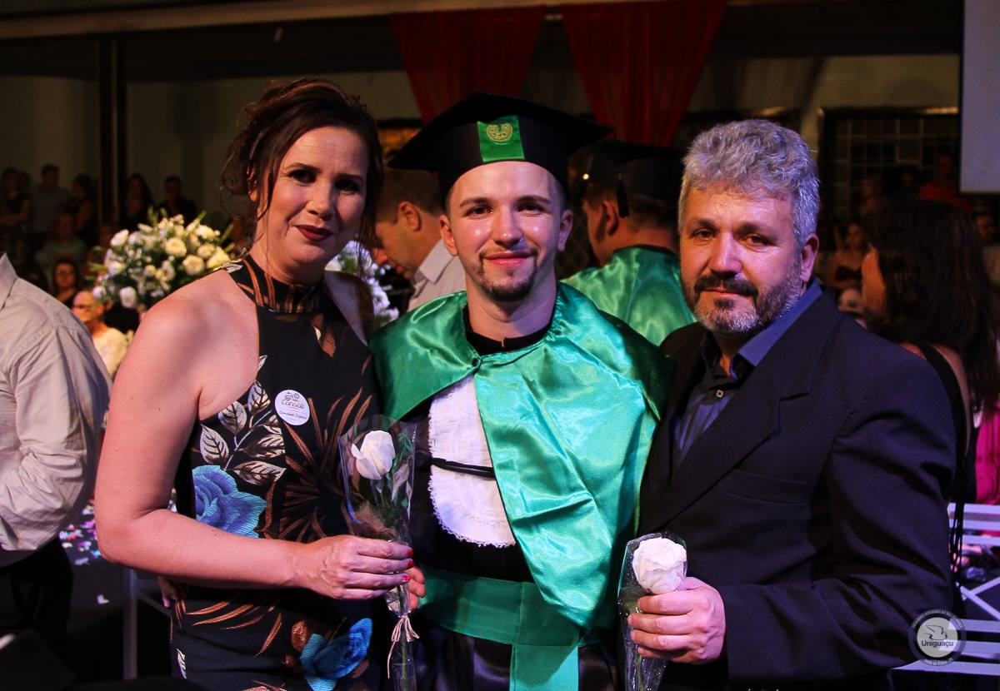
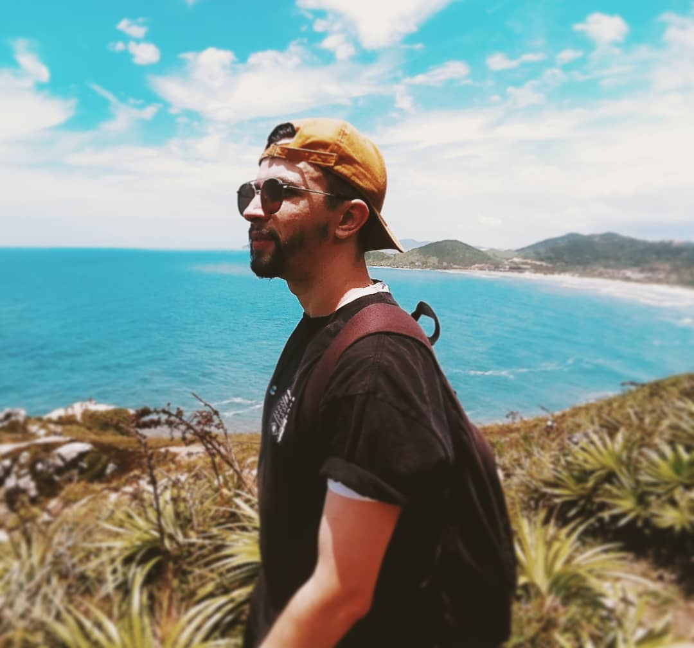
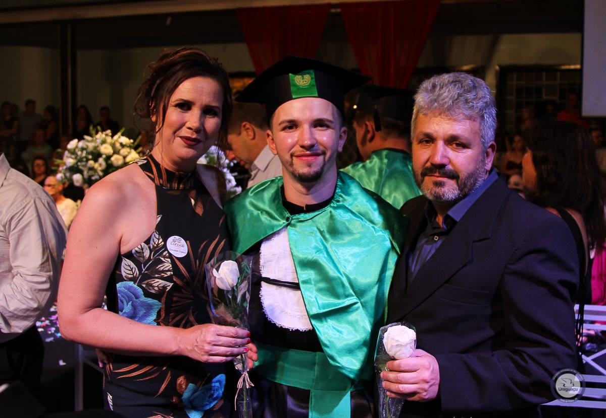
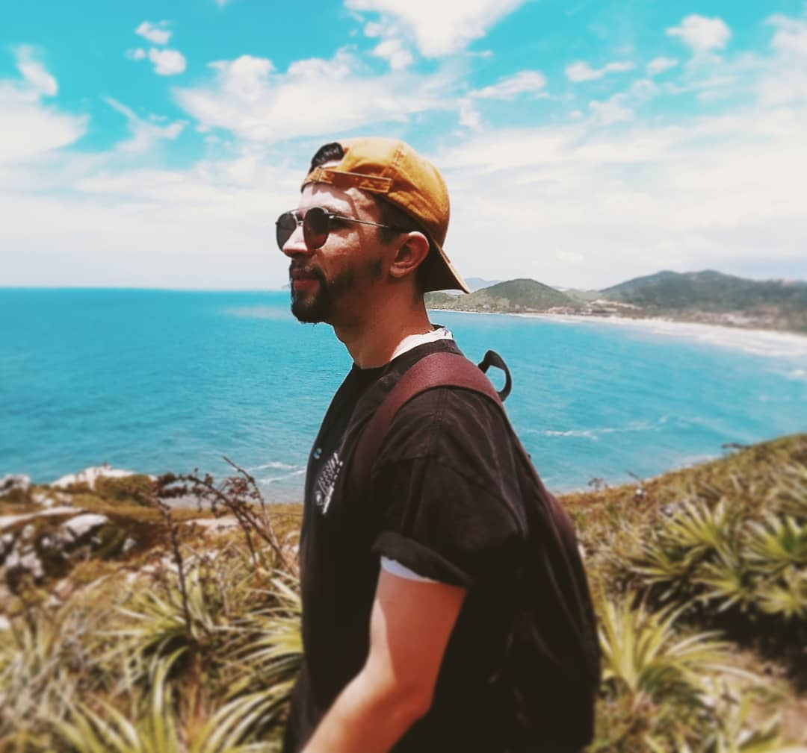
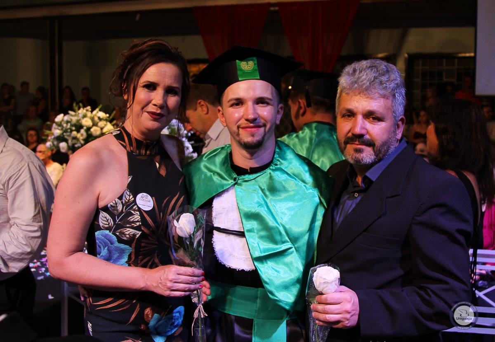

Idade: 27 Anos
Localização: São Mateus do Sul - Paraná
Hello, world!
Me chamo Rodrigo Bianek, tenho 27 anos e resido no extremo sul do Paraná, em São Mateus do Sul!
Estou iniciando a minha transição de carreira neste momento, sou Bacharel em Educação Física pela UGV, formado desde 2018 mas infelizmente não segui a profissão.
Posso afirmar que estou pronto para seguir jornada no objetivo de me tornar um desenvolvedor.
Este será meu Portfólio no decorrer do curso, então será atualizado sempre que necessário. #VQV